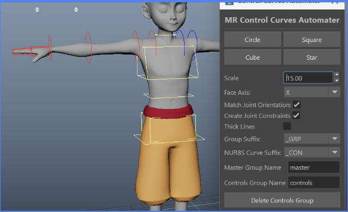
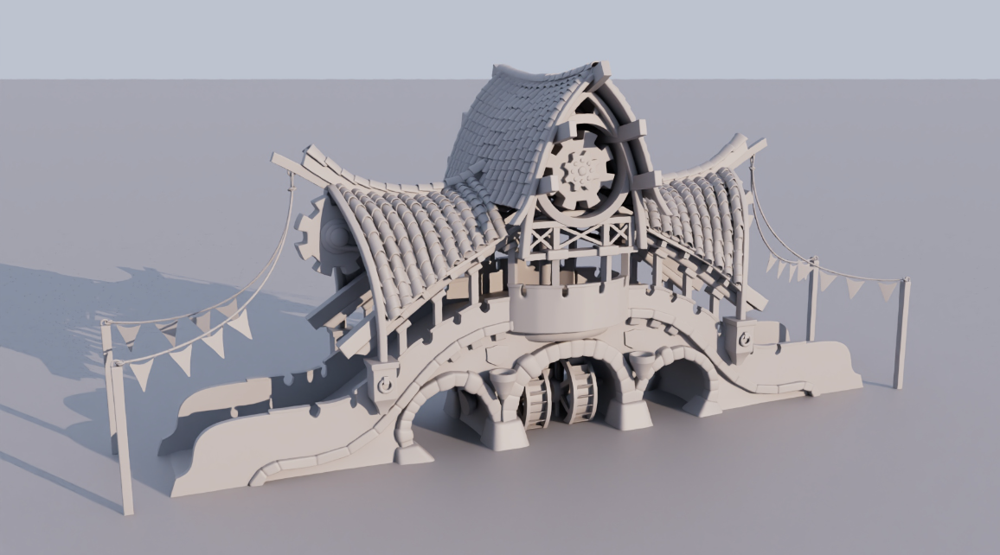

3D Technical Artist • Modeling • Rigging • Tool Development
Crystal is a senior undergraduate studying game development at the University of Texas at Dallas. Her specialty is real-time assets and pipeline tool development.

A rig helper which handles the placement and appearance of control curves. Features include:

A 3D model of a fantasy theme park bridge. Created based on concept art by forestbox on Instagram. Created in Autodesk Maya.